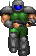
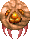
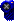

Cooperative MARL is almost always tested on state vectors or top-down 2D images. Embodied agents get neither. They see a private first-person camera, teammates vanish behind walls, and coordination has to come from what each agent can see.
COMRAD is a cooperative benchmark built on ViZDoom for exactly that setting. Every scenario is a compiled WAD, agents act through factorized discrete actions, and a standard baseline trains for 100M steps in about an hour on a single GPU.

13 purely cooperative scenarios spanning social dilemmas, role asymmetry, spatial and temporal synchronization, and combat.
DoomGen, a relaxed-Voronoi map generator that turns each scenario into a seedable distribution of layouts.- Two independent difficulty axes, task mechanics and spatial layout, with curriculum learning tools on top.

Seven CTDE algorithms (eight configurations) on one asynchronous Sample Factory stack: IPPO, MAPPO, HAPPO, IDQN, VDN, QMIX, QPLEX.
Read the full abstract
Benchmarks are central to the development and evaluation of multi-agent reinforcement learning (MARL) algorithms. As the cooperative MARL community has grown, two categories of evaluation environments have proven indispensable: low-dimensional feature-vector benchmarks that isolate algorithmic behavior in compact state spaces, and two-dimensional pixel-based benchmarks that rely on overhead visual observations. Embodied cooperation, however, requires high-dimensional 3D egocentric perception, partial observability arising from line-of-sight occlusion, and the ability to close the gap between recognizing a coordination pattern and executing it from a first-person view. While various 3D environments have been explored for vision-based RL, no existing platform simultaneously provides a standardized, purely cooperative multi-agent benchmark with 3D first-person observations and high-throughput simulation.
To address this gap, we introduce COMRAD, a COoperative Multi-Agent Reinforcement LeArning benchmark suite in Doom, featuring a diverse set of challenging scenarios spanning role asymmetry, temporal synchronization, and spatial navigation. To introduce within-scenario variability, we develop DoomGen, a procedural map generator that produces diverse layout configurations for every scenario. We integrate COMRAD with Sample Factory, a high-throughput asynchronous RL framework, and implement seven MARL baselines on top of it, reaching ~25K frames per second during training. Our experiments show that COMRAD poses significant challenges for current CTDE methods, establishing visual cooperative MARL as an important open frontier.